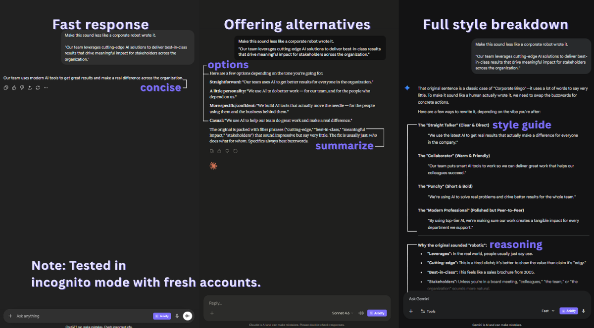

The honest answer to "which AI is best?" is: it depends on what you are doing. ChatGPT, Claude, and Gemini are all capable models, but they have meaningfully different strengths. If you use AI for real work, knowing which tool to reach for in which situation saves you time and produces better results.
This is not a benchmark comparison or a spec sheet. It is a practical guide based on daily usage across coding, writing, research, and analysis. The goal is to help you pick the right tool for each task, not to declare an overall winner.
A note on timing: AI models update frequently. The observations here are based on the current generation of models (GPT-5/5.3, Claude Sonnet/Opus 4.6, Gemini 2.5/3.1 Pro) as of April 2026. If you are reading this months later, some specifics may have shifted, but the general patterns tend to hold across updates.
💻 Coding
This is probably the category with the clearest differences between the three platforms.
| Task | Best pick | Why |
|---|---|---|
| ⚡ Code generation | Claude | Produces cleaner, more complete code out of the box. Better at following structural constraints in system prompts. |
| 🐛 Debugging | ChatGPT | Better at working through multi-step debugging sessions. More willing to ask clarifying questions when the bug description is vague. |
| 🔎 Code review | Claude | More thorough at catching edge cases and security issues. Less likely to rewrite your code when you asked for review only. |
| 🔗 API integration | Gemini | Strongest for Google ecosystem (Firebase, GCP, Android). For other APIs, ChatGPT and Claude are comparable. |
| 📖 Explaining code | Claude | Better at structured explanations. Tends to explain the "why" behind code decisions, not just the "what." |
Bottom line: If you write code daily, Claude is the strongest default for generation and review. ChatGPT is better for interactive debugging sessions where you go back and forth. Gemini is worth using for anything in the Google ecosystem.
✍️ Writing
Writing quality is where personal preference matters most. All three models can produce competent text, but they have different defaults that affect the output in noticeable ways.
| Task | Best pick | Why |
|---|---|---|
| 📝 Long-form content | Claude | Handles longer context windows well. Better at maintaining tone and structure across 2,000+ word pieces. |
| ✉️ Email drafting | ChatGPT | Faster for short, formulaic text. Better at matching casual vs. formal tone when instructed. |
| 🖊️ Editing feedback | Claude | Better at pointing out issues without rewriting your text. Respects "keep my voice" instructions more consistently. |
| 📢 Marketing copy | ChatGPT | More willing to be punchy and persuasive. Claude tends to be cautious with strong claims, which is sometimes good but sometimes too conservative. |
| 📄 Technical docs | Claude | More structured output. Better at consistent formatting across sections (parameter tables, code examples, etc.). |
Bottom line: Claude produces text that needs less editing. ChatGPT is faster for short, disposable writing (emails, Slack messages, quick drafts). Gemini is usable for writing but rarely the best choice unless you need integration with Google Docs.

Same prompt, three different approaches. Tested in incognito mode with fresh accounts.
🔍 Research and analysis
This is where Gemini's integration with Google Search becomes a genuine advantage, and where the differences between the platforms are most task-dependent.
| Task | Best pick | Why |
|---|---|---|
| 🌐 Web research | Gemini | Native Google Search integration produces more current results. Perplexity is also strong here, but among the big three, Gemini leads. |
| 📊 Data analysis | ChatGPT | Advanced Data Analysis handles CSV uploads, chart generation, and statistical analysis. Claude and Gemini can analyze data but lack the built-in execution environment. |
| 📑 Document summarization | Claude | Larger effective context window. Better at summarizing long documents without losing key details in the middle. |
| ✅ Fact-checking | Gemini | Real-time search access makes it stronger for verifying current information. For historical facts, all three are comparable. |
| ⚔️ Competitive analysis | Gemini + Claude | Use Gemini to gather current data, then Claude to structure and analyze it. This two-step approach consistently outperforms using either one alone. |
Bottom line: Gemini is the go-to for anything that needs current web information. ChatGPT is best when you need to process data files. Claude is strongest when you need to work through long documents carefully.
🧠 Conversation and reasoning
Beyond specific tasks, the three platforms have different conversational styles that affect how useful they feel during extended sessions.
| Aspect | ChatGPT | Claude | Gemini |
|---|---|---|---|
| 🎯 Instruction following | Good | Excellent | Good |
| 🤔 Admitting uncertainty | Sometimes hedges too much | Clear about what it knows vs. doesn't | Can be overconfident |
| 🔄 Multi-turn coherence | Strong | Strong | Moderate (can lose context) |
| 🚧 Following constraints | Moderate (sometimes ignores "don't") | Strong (respects negative instructions) | Moderate |
| ⚡ Speed | Fast | Moderate | Fast |
The "following constraints" row is particularly important for anyone who uses system prompts. If your prompt says "do NOT rewrite the code," Claude is the most reliable at following that instruction. ChatGPT and Gemini will sometimes ignore negative constraints, especially in longer conversations.
Tip: If you use multiple AI platforms, a prompt manager that works across all of them saves you from maintaining separate prompt libraries. Arixify injects saved prompts into ChatGPT, Claude, Gemini, and 20+ other AI platforms with the same one-click workflow.
💰 Pricing
All three platforms offer free tiers and paid plans. Here is how they compare for individual users:
| Plan | ChatGPT | Claude | Gemini |
|---|---|---|---|
| 🆓 Free tier | GPT-5.3 with usage limits (ad-supported) | Sonnet 4.6 with usage limits | Gemini 2.5 Flash with limited 2.5 Pro access |
| 💳 Paid plan | $20/mo (Plus) | $20/mo (Pro) | $19.99/mo (Google AI Pro) |
| ⭐ Best paid feature | GPT-5 Thinking, Deep Research, Codex agent | Opus 4.6, Projects, Claude Code | Gemini 3.1 Pro, Deep Research, Google ecosystem integration |
At the same ~$20/month price point, the decision comes down to which model's strengths match your daily usage. If you primarily code and write, Claude Pro gives you the most value. If you do a lot of data analysis, ChatGPT Plus with Advanced Data Analysis is hard to beat. If you live in the Google ecosystem, Google AI Pro is the natural choice.
The free tiers are good enough for most people. Unless you hit usage limits daily or need access to the top-tier models for every conversation, the free plans cover the majority of use cases. Pay only when you consistently run into limits.
🔄 The practical approach: use all three
The most productive AI users do not pick one platform and stick with it. They use different tools for different tasks, the same way a developer uses different editors or a designer uses different apps.
A practical daily setup might look like this:
- Default to Claude for code generation, writing, and document analysis. It produces the most consistent quality with the least post-editing.
- Switch to ChatGPT for interactive debugging, data analysis with file uploads, and quick disposable text (emails, messages, short summaries).
- Switch to Gemini when you need current web information, Google ecosystem integration, or fact-checking against live sources.
- Use Perplexity for pure research tasks where you want cited sources. It is not one of the "big three" but it fills a gap none of them cover as well.
The challenge with using multiple platforms is maintaining your workflow across all of them. Your best system prompts should be available on every platform, not locked into one. If you have a code review prompt that works perfectly, you want to use it whether you are in ChatGPT or Claude that day.
📋 Quick reference: which AI for which task
| Task | First choice | Runner-up |
|---|---|---|
| ⚡ Generate code | Claude | ChatGPT |
| 🐛 Debug code | ChatGPT | Claude |
| 🔎 Review code | Claude | ChatGPT |
| 📝 Write long-form | Claude | ChatGPT |
| ✉️ Draft emails | ChatGPT | Claude |
| 📊 Analyze data | ChatGPT | Gemini |
| 🌐 Web research | Gemini | Perplexity |
| 📑 Summarize docs | Claude | ChatGPT |
| ✅ Fact-check | Gemini | Perplexity |
| 🎓 Learn new topic | Claude | ChatGPT |
Save this table somewhere accessible. Better yet, save the system prompts that make each platform perform best at its strongest tasks. A well-tuned prompt on the right platform is worth more than the best model with vague instructions.